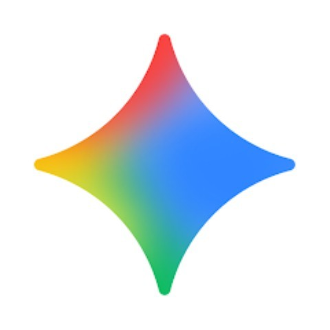
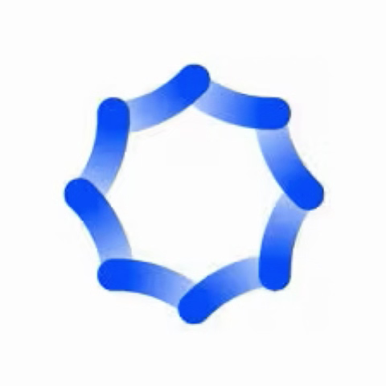

| 1 |
ChatGPT |
|
AI Assistant |
ChatGPT is an AI chatbot
ChatGPT is a conversational AI that helps with writing, coding,
learning, and general problem solving.
|
chatgpt.com |
| 2 |
Grok |
|
|
Grok is X’s AI assistant
Grok is xAI’s chatbot integrated into X (Twitter), capable of
using real-time data and trends.
|
x.com/i/grok |
| 3 |
Claude |
|
|
Claude by Anthropic
Claude, developed by Anthropic, is focused on safe, helpful, and
aligned conversational AI.
|
claude.ai |
| 4 |
Gemini |
 |
|
Google’s Gemini
Google’s Gemini is a multimodal AI model designed for reasoning,
coding, and creative tasks.
|
gemini.google.com
|
| 5 |
Synthesia |

|
Video Generation |
Synthesia AI video generator
Synthesia creates AI-powered videos with avatars and voiceovers
from text input.
|
synthesia.io |
| 6 |
Google Veo |
|
|
Google Veo by DeepMind
Veo, developed by Google DeepMind, generates high-quality AI
videos from text prompts.
|
deepmind.google/models/veo
|
| 7 |
OpusClip |
|
|
OpusClip video repurposer
OpusClip repurposes long videos into short, engaging clips for
social media.
|
opus.pro |
| 9 |
Midjourney |
|
Image Generation |
Midjourney image generator
Midjourney is an AI tool that generates artistic and creative
images from text prompts.
|
midjourney.com
|